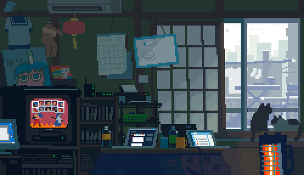
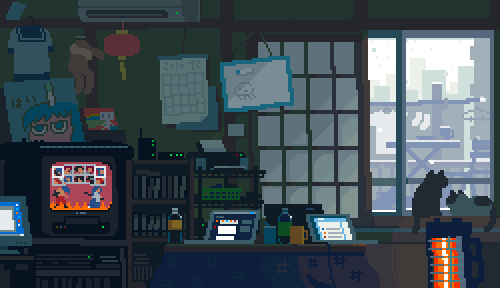

With the following code, you can show a picture spanning over the entire window when hovering the mouse over some text
Examples
At home
The pond Train station
Train station
With the following code, you can show a picture spanning over the entire window when hovering the mouse over some text
Examples
At home
The pond
Train station
HTML code
CSS code
Javascript code (jQuery is required)